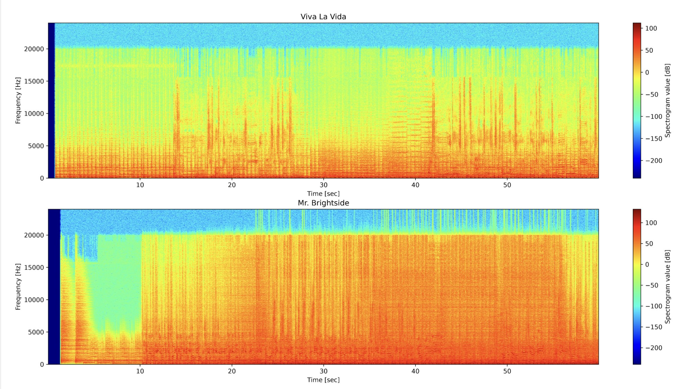
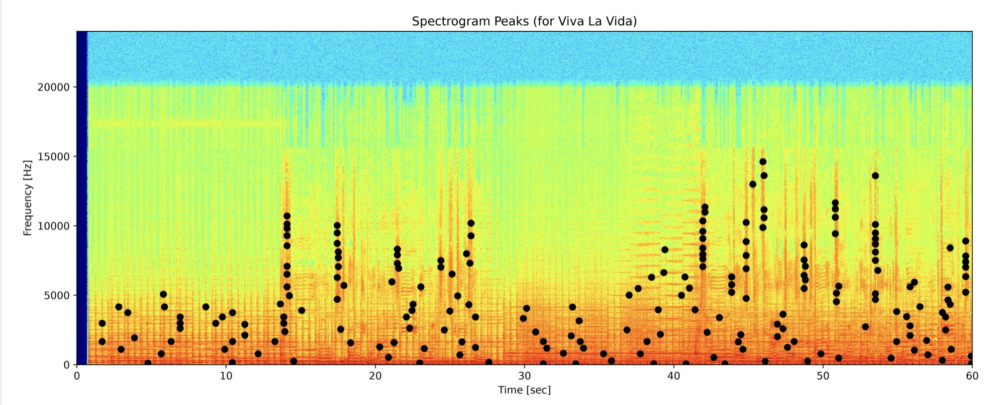

Building
Shazam.
A simplified Shazam: spectrogram peaks become a "constellation map," peak pairs become hashes, and a clip is identified by matching hashes against a database. It still finds the right song with half the clip silenced or buried in heavy noise.
Headline10/10 clean clips identified · still correct with half of a clip silenced · 6/6 under heavy noise on full clips
- Course
- EE 66, Signals, Dynamics & Information
- Lab
- Lab 1: Shazam
- Timeline
- Week 5, Fall 2026
- Topics
- DFT, spectrograms, peak finding, hashing
Overview
A simplified version of Shazam's audio fingerprinting, built in Python. Given a short clip that may be noisy or partly silent, the system identifies which song it came from. It compares compact fingerprints against a database instead of comparing raw audio. I tested it on 60-second excerpts of Viva La Vida and Mr. Brightside.
Approach
- Why one DFT isn't enough. The DFT of a 10-second clip shows which frequencies appear, but not when. One-second slices of the same song have clearly different spectra, because music's frequency content keeps changing.
- Spectrogram. Split the audio (sampled at 48 kHz) into 4096-sample windows and take a DFT of each, giving a time–frequency image of the song.
- Constellation map. Run a 51×51 maximum filter over the spectrogram and keep only points that are the local maximum and above an energy threshold. This reduces thousands of points to a few hundred strong peaks.
- Fingerprints. Hash each peak with each of the next 15 peaks, using both frequencies and the time gap between them, and tag the hash with the first peak's time. The result is a list of (hash, time) pairs.
- Matching. Look up the clip's hashes in the database. The song with the most matching hashes wins, and its share of all matches is the confidence.
Peak test: S(f, t) = max S over a 51×51 neighborhood and S(f, t) > threshold
Results
| Test | Trials | Correct | Confidence |
|---|---|---|---|
| Clean 20-second clip | 10 | 10 / 10 | 100% (one at 92.9%) |
| Heavy Gaussian noise (μ = σ = 10,000), 60-second clip | 6 | 6 / 6 | 96–100% |
| Heavy Gaussian noise, 20-second clip | 10 | 6 / 10 | 100% when matched |
| “Blocked speaker”: 10 of 20 seconds zeroed out | 2 | 2 / 2 | 100% |
The noise is severe: the audio is 16-bit, so its samples only reach about ±32,767, and the clips sound almost unrecognizable. Every noisy failure was Viva La Vida on a 20-second clip (1 of 5 matched; Mr. Brightside went 5 for 5). Those clips returned no matching hashes at all rather than the wrong song.


What I learned
- Time and frequency are a trade-off. One DFT gives the best frequency detail but no timing. A spectrogram gets timing back by using short windows, and the 4096-sample window size balances the two.
- Keeping less made it more robust. Throwing away everything except the strongest local peaks made the fingerprint survive heavy noise and long gaps of silence. It only takes a fraction of the hashes agreeing to pick the right song.
- Relative timing makes it work anywhere in the song. Hashing pairs of peaks by how far apart they are, not by when they happen, lets a clip taken from any point in the song match.
- The database limits robustness. Viva La Vida has far fewer fingerprints stored (3,353 vs. 5,831 for Mr. Brightside), so a short, noisy clip of it has fewer chances to produce a match.